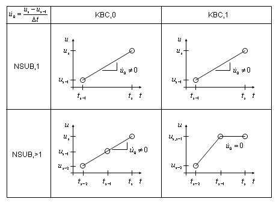

The following transient analysis topics are available:
The transient analysis solution method (ANTYPE,TRANS) used depends on the DOFs involved. Structural, acoustic, and other second order systems (that is, the systems are second order in time) are solved using one method and the thermal, magnetic, electrical and other first order systems are solved using another. Each method is described subsequently. If the analysis contains both first and second order DOFs (e.g., structural and magnetic), then each DOF is solved using the appropriate method. For matrix coupling between first and second order effects such as for piezoelectric analysis, a combined procedure is used.
Initial conditions are known.
Gyroscopic or Coriolis effects are included in a structural analysis when requested (using the CORIOLIS command).
For most structural dynamics problems of a mechanical system, the spatial discretization for the principle of virtual work using the finite element method gives the finite element semi-discrete equation of motion as follows:
(15–5) |
where:
 = structural mass matrix = structural mass matrix |
 = structural damping matrix = structural damping matrix |
| = nodal acceleration vector |
| = nodal velocity vector |
| = nodal displacement vector |
| = internal load vector |
| = applied load vector |
Three methods are available for solving Equation 15–5:
Central difference time integration method -- Used for explicit transient analyses only and described in the LS-DYNA Theoretical Manual([200]).
Newmark time integration method -- Used for implicit transient analyses as described below. This method is requested by setting
TINTOPT= NMK (which is the default) on the TRNOPT command.HHT time integration method -- Used also for implicit transient analyses as described below. This method is an extension of the Newmark time integration method and is requested by setting
TINTOPT= HHT on the TRNOPT command.
The structural dynamics problems concerned with the mechanical behavior governed by the above differential equation can be classified into two classes; that is, linear and nonlinear problems.
In linear structural dynamics systems, the internal load is linearly proportional to the nodal displacement, and the structural stiffness matrix remains constant. Therefore, Equation 15–5 can be rewritten as:
(15–6) |
where:
 = structural stiffness matrix = structural stiffness matrix |
Among direct time integration methods for numerically solving the finite element semi-discrete
equation of motion given in Equation 15–6, several methods such as the
Newmark method (Newmark([406])) and the generalized- method (Chung and Hulbert([352])) are incorporated in
the program. As the generalized-
method (Chung and Hulbert([352])) are incorporated in
the program. As the generalized- method recovers the Wood-Bosak-Zienkiewicz method (also called WBZ-
method recovers the Wood-Bosak-Zienkiewicz method (also called WBZ- method) (Wood et al.([354])), the Hilber-Hughes-Taylor
method (also called HHT-
method) (Wood et al.([354])), the Hilber-Hughes-Taylor
method (also called HHT- method) (Hilber et al.([353])), and the Newmark
family of time integration algorithms, the program allows you to take advantage of any of
the these methods by specifying different input parameters, as described below.
method) (Hilber et al.([353])), and the Newmark
family of time integration algorithms, the program allows you to take advantage of any of
the these methods by specifying different input parameters, as described below.
Newmark Method
The Newmark family of time integration algorithms (Newmark([406])) is one of the most popular time integration methods as a single step algorithm. The semi-discrete equation of motion given in Equation 15–6 can be rewritten as (Hughes([165])):
(15–7) |
where:
 = the nodal acceleration vector at time = the nodal acceleration vector at time 
|
 = the nodal velocity vector at time = the nodal velocity vector at time 
|
 = the nodal displacement vector at time = the nodal displacement vector at time 
|
= the applied load at time 
|
In addition to Equation 15–7, the Newmark family of time integration algorithms requires the displacement and velocity to be updated as follows:
(15–8) |
(15–9) |
where:
| = Newmark's integration parameters |
 = nodal acceleration vector at time = nodal acceleration vector at time 
|
 = nodal velocity vector at time = nodal velocity vector at time 
|
= nodal displacement vector at time 
|
Thus, the Newmark family of time integration algorithms can be determined by the Newmark
integration parameters. In the end, the Newmark integration scheme consists of the three
finite difference equations presented in Equation 15–7 through Equation 15–9, and the three unknowns  ,
,  , and
, and  can be numerically calculated by the three algebraic equations along with
the three known quantities , , and
can be numerically calculated by the three algebraic equations along with
the three known quantities , , and  .
.
By making use of the three algebraic equations given in Equation 15–7 through
Equation 15–9, a single-step time integrator in terms of the
unknown  and the three known quantities can be written as:
and the three known quantities can be written as:
(15–10) |
where:

|

|
First, the unknown  is calculated using Equation 15–10. Then, the
program computes the two unknowns
is calculated using Equation 15–10. Then, the
program computes the two unknowns  and by using the following equations:
and by using the following equations:
(15–11) |
(15–12) |
The most important factors in choosing an appropriate time integration scheme for the finite element semi-discrete equation of motion given in Equation 15–5 are accuracy, stability, and dissipation. In conditionally stable time integration algorithms, stability is affected by a chosen size of the time step; whereas in unconditionally stable time integration algorithms, a time step size can be chosen independent of stability considerations.
In the Newmark method, the amount of numerical algorithm dissipation can be controlled by one
of Newmark's parameters,  , as follows:
, as follows:
(15–13) |
With the Newmark parameters satisfying the above conditions, the Newmark family of methods may
be unconditionally stable (Hughes([165])). By introducing the
amplitude decay factor  , the above conditions can be written:
, the above conditions can be written:
(15–14) |
Consequently, the program provides the user with the Newmark integration procedure, which is
unconditionally stable via input of the amplitude decay factor  on the TINTP command. Alternatively, the
on the TINTP command. Alternatively, the  and
and  parameters may be input directly using the TINTP
command.
parameters may be input directly using the TINTP
command.
Generalized HHT- Method
Method
In the Newmark method, the amount of numerical dissipation can be controlled by one parameter in Equation 15–13 or  in Equation 15–14. However, in low frequency modes
the Newmark method fails to retain the second-order accuracy as . Note that the Newmark implicit method (constant average method; namely,
and
), which is unconditionally stable and second-order accurate, has no
numerical damping. If other sources of numerical damping are not introduced, the lack of
numerical damping can be undesirable so that the higher frequencies of the structure can
produce unacceptable levels of numerical noise (Hughes([165])).
in Equation 15–14. However, in low frequency modes
the Newmark method fails to retain the second-order accuracy as . Note that the Newmark implicit method (constant average method; namely,
and
), which is unconditionally stable and second-order accurate, has no
numerical damping. If other sources of numerical damping are not introduced, the lack of
numerical damping can be undesirable so that the higher frequencies of the structure can
produce unacceptable levels of numerical noise (Hughes([165])).
To circumvent the drawbacks of the Newmark family of methods, the program implements the
generalized HHT- method which sufficiently damps out spurious high-frequency response via
introducing controllable numerical dissipation in higher frequency modes, while maintaining
the second-order accuracy. It should be noted that the generalized HHT-
method which sufficiently damps out spurious high-frequency response via
introducing controllable numerical dissipation in higher frequency modes, while maintaining
the second-order accuracy. It should be noted that the generalized HHT- method incorporated in the program is capable of recovering the WBZ-
method incorporated in the program is capable of recovering the WBZ- method (Wood et al.([354])) and the HHT-
method (Wood et al.([354])) and the HHT- method (Hilber et al.([353])) as well as the Newmark
family of time integration algorithms, depending upon the user's input on the
TINTP command.
method (Hilber et al.([353])) as well as the Newmark
family of time integration algorithms, depending upon the user's input on the
TINTP command.
To solve for the three unknowns  ,
,  , and
, and  , along with Equation 15–8 and Equation 15–9 the generalized HHT-
, along with Equation 15–8 and Equation 15–9 the generalized HHT- method uses the algebraic equation:
method uses the algebraic equation:
(15–15) |
where:

|
Equation 15–15 give the finite difference form:
(15–16) |
where:

|
Analogous to the Newmark method, the generalized HHT- method calculates the unknown
method calculates the unknown  at time
at time  by making use of Equation 15–16. Then, the program computes
the two unknowns
by making use of Equation 15–16. Then, the program computes
the two unknowns  and
and  by using the equations given in Equation 15–11 and
Equation 15–12. Since the generalized HHT-
by using the equations given in Equation 15–11 and
Equation 15–12. Since the generalized HHT- method is also an implicit time scheme, the structural stiffness matrix
must be factorized to solve for
method is also an implicit time scheme, the structural stiffness matrix
must be factorized to solve for  at time
at time  .
.
As mentioned in the literature (Chung and Hulbert([352])), the generalized HHT- method is unconditionally stable and second-order accurate if the
parameters meet the following conditions:
method is unconditionally stable and second-order accurate if the
parameters meet the following conditions:
(15–17) |
where (Wood et al.([354])) and (Hilber et al.([353])). For the generalized HHT- method, you can input the four parameters on the TINTP
command. By introducing the amplitude decay factor , the program also allows the user to control the amount of numerical
damping if the four parameters on the TINTP command meet the following
conditions:
method, you can input the four parameters on the TINTP
command. By introducing the amplitude decay factor , the program also allows the user to control the amount of numerical
damping if the four parameters on the TINTP command meet the following
conditions:
(15–18) |
If the WBZ- method is desired, the user can control the amount of numerical damping if
the four parameters on the TINTP command meet the following
conditions:
method is desired, the user can control the amount of numerical damping if
the four parameters on the TINTP command meet the following
conditions:
(15–19) |
Finally, the program also allows a user who wants to use the generalized HHT- method to control the amount of numerical damping if the four parameters on the TINTP command meet the following conditions:
(15–20) |
It should be noted that the generalized HHT- method is second-order accurate and unconditionally stable. This method
allows you to control the amount of numerical damping. The amplitude decay factor is
recommended to be set as (Hughes([165])), with which any spurious
participation of the higher modes can be damped out and the lower modes are not affected. A
significant amount of numerical damping may be introduced by setting , but it is not recommended.
method is second-order accurate and unconditionally stable. This method
allows you to control the amount of numerical damping. The amplitude decay factor is
recommended to be set as (Hughes([165])), with which any spurious
participation of the higher modes can be damped out and the lower modes are not affected. A
significant amount of numerical damping may be introduced by setting , but it is not recommended.
In nonlinear structural dynamics problems, the internal load is no longer linearly proportional to the nodal displacement, and the structural stiffness matrix is dependent on the current displacement. Therefore, Instead of Equation 15–6, any time integration scheme should be applied to the nonlinear semi-discrete equation:
 | (15–21) |
Equation 15–21 represents a nonlinear system of simultaneous algebraic
equations; hence, any time integration operator may be used in association with the
Newton-Raphson iterative algorithm. For nonlinear structural dynamics problems, both the
Newmark method and the generalized HHT- method are incorporated in the program.
method are incorporated in the program.
Newmark Method
The Newmark method assumes that at the time  , the semi-discrete equation of motion given in Equation 15–21 can be rewritten as:
, the semi-discrete equation of motion given in Equation 15–21 can be rewritten as:
(15–22) |
Note that is dependent on the current displacement at time . In addition to Equation 15–22, the Newmark family of time integration algorithms requires the displacement and velocity to be updated as given in Equation 15–8 and Equation 15–9.
By introducing the residual vector  , Equation 15–22 can be
written as:
, Equation 15–22 can be
written as:
(15–23) |
It is important to note that the time integration operator given in either Equation 15–22 or Equation 15–23 represents a nonlinear system of simultaneous algebraic equations. Therefore, a linearized form of the time integration operator can be obtained by the Newton-Raphson method as follows:
(15–24) |
where:
= the estimate of  at the kth iteration at the kth iteration |
= the displacement increment of  at the kth iteration at the kth iteration |
Equation 15–24 gives:
 | (15–25) |
where:
 = the tangent stiffness matrix at time = the tangent stiffness matrix at time 
|
For nonlinear structural dynamics problems, the program allows a user to input the amplitude decay factor or the Newmark integration parameters on the TINTP command.
Generalized HHT- Method
Method
The generalized HHT- method for nonlinear structural dynamics problems assumes:
method for nonlinear structural dynamics problems assumes:
(15–26) |
where:
By introducing the residual vector , Equation 15–26 can be written as:
 | (15–27) |
The time integration operator given in Equation 15–26 or Equation 15–27 also represents a nonlinear system of simultaneous algebraic equations. Therefore, a linearized form of the time integration operator can be obtained by the Newton-Raphson method as follows:
(15–28) |
where:
Equation 15–28 gives:
(15–29) |
where:

|
Two methods of solution for the Newmark method (Equation 15–10) are available: full and mode-superposition (TRNOPT command). Each are described subsequently. Only the full solution method is available for HHT (Equation 15–15).
The full solution method (TRNOPT,FULL) solves Equation 15–10 directly and makes no additional assumptions. In a nonlinear analysis, the Newton-Raphson method (Newton-Raphson Procedure) is employed along with the Newmark assumptions. Automatic Time Stepping discusses the procedure for the program to automatically determine the time step size required for each time step.
Inherent to the Newmark method is that the values of  , , and at the start of the transient must be known. Nonzero initial conditions
are input either directly (with the IC commands) or by performing a
static analysis load step (or load steps) prior to the start of the transient itself.
Static load steps are performed in a transient analysis by turning off the transient time
integration effects (with the TIMINT,OFF command). The transient itself
can then be started (by TIMINT,ON). The default with transient analysis
(ANTYPE,TRANS) is for the transient to be running
(TIMINT,ON); that is, to start the transient immediately. This
implies . The initial conditions are outlined in the subsequent paragraphs. Cases
referring to "no previous load step" mean that the first load step is transient.
, , and at the start of the transient must be known. Nonzero initial conditions
are input either directly (with the IC commands) or by performing a
static analysis load step (or load steps) prior to the start of the transient itself.
Static load steps are performed in a transient analysis by turning off the transient time
integration effects (with the TIMINT,OFF command). The transient itself
can then be started (by TIMINT,ON). The default with transient analysis
(ANTYPE,TRANS) is for the transient to be running
(TIMINT,ON); that is, to start the transient immediately. This
implies . The initial conditions are outlined in the subsequent paragraphs. Cases
referring to "no previous load step" mean that the first load step is transient.
- Initial Displacement
The initial displacements are:
(15–30)
where:
 = vector of initial displacements
= vector of initial displacements = displacement vector specified by the initial conditions (IC command)  = displacement vector resulting from a static analysis
(TIMINT,OFF) of the previous load step
= displacement vector resulting from a static analysis
(TIMINT,OFF) of the previous load step - Initial Velocity
The initial velocities are:

(15–31)
where:
= vector of initial velocities = vector of velocities specified by the initial conditions (IC commands)  = displacements from a static analysis
(TIMINT,OFF) of the previous load step
= displacements from a static analysis
(TIMINT,OFF) of the previous load step  = displacement corresponding to the time point before
= displacement corresponding to the time point before  solution.
solution.  is if
is if  is the first solution of the analysis (i.e. load step 1
substep 1).
is the first solution of the analysis (i.e. load step 1
substep 1). = time increment between  and
and
If the previous load step was run as a static analysis (TIMINT,OFF), initial velocities are calculated using the previous two displacements and the previous time increment. Using either a single substep (NSUBST,1) or ramped loading (KBC,0) within the previous load step will result in nonzero initial velocities (assuming nonzero displacement), as shown in Figure 15.2: Effect of Number of Substeps (NSUBST) and Ramping (KBC) on Initial Velocity for TIMINT,OFF. Zero initial velocities may be obtained by using multiple substeps (NSUBST,>1) and stepped loading (KBC,1).
Figure 15.2: Effect of Number of Substeps (NSUBST) and Ramping (KBC) on Initial Velocity for TIMINT,OFF
- Initial Acceleration
The initial acceleration is simply:
(15–32)
where:
 = vector of initial accelerations
= vector of initial accelerations= vector of accelerations specified by the initial conditions (IC command). - Nodal and Reaction Load
Inertia, damping and static loads on the nodes of each element are computed.
The inertial load part of the element output is computed by:
(15–33)
where:
= vector of element inertial forces = element mass matrix  = element
acceleration vector
= element
acceleration vector The acceleration of a typical DOF is given by Equation 15–12 for time
 . By default, the acceleration vector
. By default, the acceleration vector  is the average acceleration between time
is the average acceleration between time  and time
and time  , since the Newmark assumptions (Equation 15–8 and Equation 15–9)
assume the average acceleration represents the true acceleration. Smoothing can be
suppressed using the TINTP command (AVSMOOTH option).
, since the Newmark assumptions (Equation 15–8 and Equation 15–9)
assume the average acceleration represents the true acceleration. Smoothing can be
suppressed using the TINTP command (AVSMOOTH option). The damping load part of the element output is computed by:
(15–34)
where:
= vector of element damping forces  = element damping matrix
= element damping matrix  = element
velocity vector
= element
velocity vector The velocity of a typical DOF is given by Equation 15–11.
The static load is part of the element output computed in the same way as in a static analysis (Solving for Unknowns and Reactions). The nodal reaction loads are computed as the negative of the sum of all three types of loads (inertia, damping, and static) over all elements connected to a given fixed displacement node.
The mode-superposition method (TRNOPT,MSUP) uses the natural frequencies and mode shapes of a linear structure to predict the response to transient loads. This solution method imposes the following additional assumptions and restrictions:
Constant
 and
and  matrices. (A gap condition is permitted.) This implies no large
deflections or change of stress stiffening, as well as no plasticity, creep, or
swelling.
matrices. (A gap condition is permitted.) This implies no large
deflections or change of stress stiffening, as well as no plasticity, creep, or
swelling. Constant time step size.
There are no element damping matrices. However, various types of system damping are available.
Time varying imposed displacements are not allowed.
The development of the general mode-superposition procedure is described in Mode-Superposition Method. Equation 14–122 and Equation 14–123 are integrated through time for each mode by the Newmark method.
The initial value of the modal coordinates at time = 0.0 are computed by solving Equation 14–122 with and assumed to be zero.
(15–35) |
where:
| = the forces applied at time = 0.0 |
A "quasi-linear" analysis variation is also available with the mode-superposition method. This variation allows interfaces (gaps) between any of the master DOFs and ground, or between any pair of master DOFs. If the gap is initially closed, these interfaces are accounted for by including the stiffness of the interface in the stiffness matrix, but if the gap should later open, a force is applied in the load vector to nullify the effect to the stiffness. If the gap is initially open, it causes no effect on the initial solution, but if it should later close, a force is again applied in the load vector.
The force associated with the gap is:
(15–36) |
where:
= gap stiffness (input as STIF,
GP command) |
| and = displacement across gap (must be master degrees of freedom) |
= initial size of gap (input as GAP,
GP command) |
This mode-superposition method with a gap definition (GP command) adds an explicit term to the implicit integration procedure. An alternate procedure is to use the full method, modeling the linear portions of the structure as superelements (using the CMS method) and the gaps as gap elements. This latter procedure (implicit integration) normally allows larger time steps because it modifies both the stiffness matrix and load vector when the gaps change status.
The load vector, which must be converted to modal coordinates (Equation 14–121) at each time step, is given by
(15–37) |
where:
 = nodal force vector = nodal force vector |
 = load vector scale factor (input as FACT, LVSCALE command) = load vector scale factor (input as FACT, LVSCALE command) |
| = load vector from the modal analysis (see Mode-Superposition Method). |
| = gap force vector (Equation 15–36) (not available for QR damped eigensolver). |
| = inertial force () |
 = acceleration vector (input with ACEL command)
(see Acceleration Effect) = acceleration vector (input with ACEL command)
(see Acceleration Effect) |
In the modal superposition method, the damping force associated with gap is added to Equation 15–36:
(15–38) |
where:
| = gap damping (input as DAMP, GP command) |
| = velocity across gap |
The governing equation of interest is as follows:
(15–39) |
where:
 = damping matrix = damping matrix |
 = coefficient matrix = coefficient matrix |
 = vector of DOF values = vector of DOF values |
 = time rate of the DOF values = time rate of the DOF values |
 = applied load vector = applied load vector |
In a thermal analysis,  is the specific heat matrix,
is the specific heat matrix,  the conductivity matrix,
the conductivity matrix,  the vector of nodal temperatures and
the vector of nodal temperatures and  the applied heat flows. Table 15.2: Nomenclature relates the
nomenclature used in Derivation of Heat Flow Matrices and Derivation of Electromagnetic Matrices for
thermal, magnetic and electrical analyses to Equation 15–39.
the applied heat flows. Table 15.2: Nomenclature relates the
nomenclature used in Derivation of Heat Flow Matrices and Derivation of Electromagnetic Matrices for
thermal, magnetic and electrical analyses to Equation 15–39.
Table 15.2: Nomenclature

| ||
| Thermal |
 temperature temperature | heat flow |
| Scalar Magnetic |
 scalar potential scalar potential |
 flux flux |
| Vector Magnetic | vector potential |
 current segment current segment |
| Electrical |
 voltage voltage | current |
The mode-superposition procedure does not apply to first order systems.
The procedure employed for the solution of Equation 15–39 is the generalized trapezoidal rule (Hughes([165])):
(15–40) |
where:
 = transient integration parameter (input on
TINTP command) = transient integration parameter (input on
TINTP command) |
 = nodal DOF values at time = nodal DOF values at time 
|
 = time rate of the nodal DOF values at time (computed at previous time step) = time rate of the nodal DOF values at time (computed at previous time step) |
Equation 15–39 can be written at time  as:
as:
(15–41) |
Substituting  from Equation 15–40 into this equation yields:
from Equation 15–40 into this equation yields:
(15–42) |
The solution of Equation 15–42 employs the same solvers used for
static analysis in Static Analysis. Once  is obtained,
is obtained,  is updated using Equation 15–40. In a nonlinear analysis, the Newton-Raphson method (Newton-Raphson Procedure) is employed along with the generalized trapezoidal assumption, Equation 15–40.
is updated using Equation 15–40. In a nonlinear analysis, the Newton-Raphson method (Newton-Raphson Procedure) is employed along with the generalized trapezoidal assumption, Equation 15–40.
The transient integration parameter  (input on TINTP command) defaults
to 1.0 (backward Euler method). For all , the system equations that follow are said to be
implicit. In addition, for the more limiting case of , the solution of these equations is said to be
unconditionally stable; i.e., stability is not a factor in time step (
(input on TINTP command) defaults
to 1.0 (backward Euler method). For all , the system equations that follow are said to be
implicit. In addition, for the more limiting case of , the solution of these equations is said to be
unconditionally stable; i.e., stability is not a factor in time step ( ) selection. The available range of
) selection. The available range of
 (using TINTP command) is therefore
limited to
(using TINTP command) is therefore
limited to
(15–43) |
which corresponds to an unconditionally stable, implicit method. For a piezoelectric analysis,
the Crank-Nicholson and constant average acceleration methods must both be requested with
, , and (on the TINTP command). Since
 influences
influences
 , sudden changes in loading need to be handled
carefully for values of . See the Basic Analysis Guide for more details.
, sudden changes in loading need to be handled
carefully for values of . See the Basic Analysis Guide for more details.
The generalized-trapezoidal method requires that the values of  and
and  at the start of the transient must be known. Nonzero initial conditions are input either
directly (with the IC command) (for
at the start of the transient must be known. Nonzero initial conditions are input either
directly (with the IC command) (for  ) or by performing a static analysis load step (or load
steps) prior to the start of the transient itself. Static load steps are performed in a
transient analysis by turning off the transient time integration effects (with the
TIMINT,OFF command). The transient itself can then started
(TIMINT,ON). The default for transient analysis
(ANTYPE,TRANS) is to start the transient immediately
(TIMINT,ON). This implies . The initial conditions
are outlined in the subsequent paragraphs.
) or by performing a static analysis load step (or load
steps) prior to the start of the transient itself. Static load steps are performed in a
transient analysis by turning off the transient time integration effects (with the
TIMINT,OFF command). The transient itself can then started
(TIMINT,ON). The default for transient analysis
(ANTYPE,TRANS) is to start the transient immediately
(TIMINT,ON). This implies . The initial conditions
are outlined in the subsequent paragraphs.
Initial DOF Values
The initial DOF values for first order systems are:
(15–44) |
where:
 = vector of initial DOF values = vector of initial DOF values |
| = vector of uniform DOF values |
 = DOF vector directly specified (IC command) = DOF vector directly specified (IC command) |
 = DOF vector resulting from a static analysis
(TIMINT,OFF) of the previous load step available = DOF vector resulting from a static analysis
(TIMINT,OFF) of the previous load step available |
 is set to TEMP (BFUNIF command)
and/or to the temperature specified by the initial conditions (IC commands)
for thermal DOFs (temperatures) and zero for other DOFs.
is set to TEMP (BFUNIF command)
and/or to the temperature specified by the initial conditions (IC commands)
for thermal DOFs (temperatures) and zero for other DOFs.
Nodal and Reaction Load Computation
Damping and static loads on the nodes of each element are computed.
The damping load part of the element output is computed by:
(15–45) |
where:
| = vector of element damping loads |
 = element damping matrix = element damping matrix |
 = element velocity vector = element velocity vector |
The velocity of a typical DOF is given by Equation 15–40. The velocity
vector is the average velocity between time  and time
and time  , since the general trapezoidal rule (Equation 15–40) assumes the average velocity represents the true velocity.
, since the general trapezoidal rule (Equation 15–40) assumes the average velocity represents the true velocity.
The static load is part of the element output computed in the same way as in a static analysis (Solving for Unknowns and Reactions). The nodal reaction loads are computed as the negative of the sum of both types of loads (damping and static) over all elements connected to a given fixed DOF node.